5．微分形式的不变量
由于研究了ds2的一个给定表达式，什么时候可以通过形如
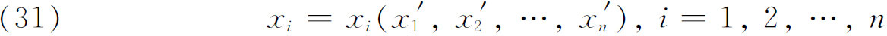
的变换，变成另一个这种表达式而保持ds2的值不变这一问题，人们便清楚地知道流形可以有不同的坐标表示。然而，流形的几何性质，必须同用以表示和研究它的坐标系的选取无关。从分析上来说，这些几何性质将由不变量表示，所谓不变量就是一个表达式，其形式在坐标变换下不变，因此，在不同的坐标系中它在一个给定点有相同的值。在黎曼几何中有兴趣的不变量，不仅包括含有微分dxi和dxj的基本二次形式，而且还可以包含系数的导数和其他函数的导数。所以它们被称为微分不变量。
以二维情形为例，设
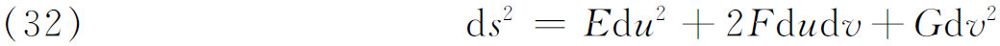
是一个曲面的距离元素（的平方），则高斯曲率K由上面的公式（8）给出。现在，如果坐标变成
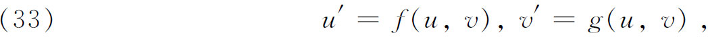
而
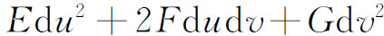
变成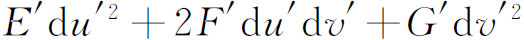
，则有定理说K＝K′，其中K′与（8）的表达式相同，不过是用带撇的变量。因此曲面的高斯曲率是一个纯量不变量。不变量K也说成是属于形式（32）的不变量，它只包含E，F，G和它们的导数。微分不变量的研究实际上是由拉梅在一个较局限的范围内开始的。他感兴趣的是三维空间中，从一个正交曲线坐标系到另一个这种坐标系的变换之下的不变量。对直角笛卡儿坐标他证明了(17)
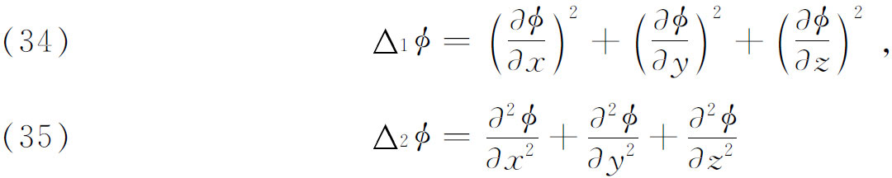
是微分不变量（他称之为微分参数）。譬如，如果
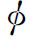
在一正交变换（转轴）下变成了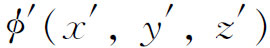
，同一点在原坐标系和新坐标系中的坐标分别是（x，y，z）和（x′，y′，z′），则在这点处有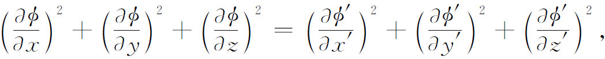
对于
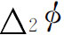
类似的方程成立。对于欧几里得空间中的直交曲线坐标系，ds2具有形式
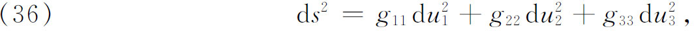
拉梅证明了［见《曲线坐标讲义》（Leçons sur les coordonnées curvilignes），1859，参阅前面第28章第5节］在直角坐标系中，由上面
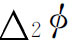
给定的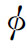
的梯度的发散量具有不变形式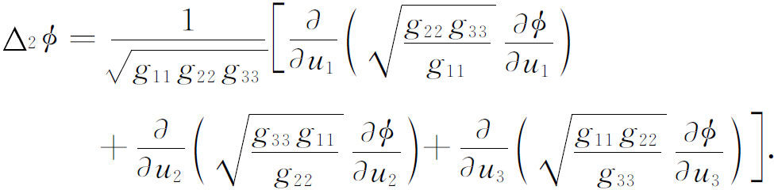
在同一著作中，拉梅顺便给出了关于由（36）给定的ds2何时确定欧几里得空间中一个曲线坐标系的条件，以及如果这样做了，又如何把它变成直角坐标。
贝尔特拉米第一个对曲面论的不变量做了研究(18)。他给出了下列这两个微分不变量
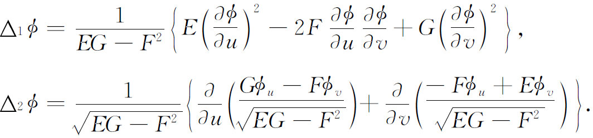
这些量都有几何意义。例如对
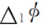
，如果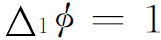
，则曲线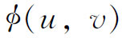
＝常数是曲面上测地线族的正交轨线。寻找微分不变量的工作随后转到对n个变量的二次微分形式。其理由仍旧是这些不变量与坐标的选取无关，它们代表流形本身的内蕴性质。譬如黎曼曲率就是一个纯量不变量。
贝尔特拉米用雅可比给出的方法(19)，成功地把拉梅不变量转到了n维黎曼流形(20)。设g照例是
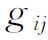
的行列式，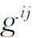
是g中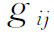
的余子式除以g，则贝尔特拉米证明了拉梅的第一个不变量变成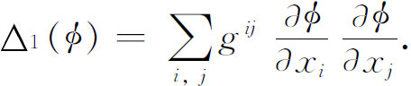
这就是
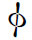
的梯度的平方的一般形式。对于拉梅的第二个不变量，贝尔特拉米得到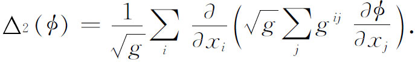
他还引进了混合微分不变量
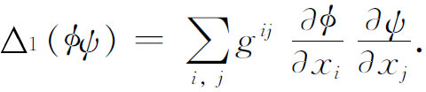
这就是
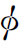
和ψ的梯度的数量积的一般形式。当然，形式ds2本身在坐标变换下是一个不变量。由此，正如我们在前节看到的，克里斯托费尔推出的他的高阶微分形式G4和Gμ也是不变量。而且他说明了如何从
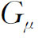
导出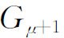
，而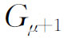
也是不变量。对这种不变量的构造，利普希茨也做了研究，不变量的数量和种类是繁多的。正如我们将要看到的，这个微分不变量理论对于张量分析是一种启示。参考书目
Beltrami，Eugenio：Opere matematiche，4 vols．，Ulrico Hoepli，1902-1920．
Clifford，William K．：Mathematical Papers，Macmillan，1882；Chelsea（reprint），1968．
Coolidge，Julian L．：A History of Geometrical Methods，Dover（reprint），1963，pp．355-387．
Encyklopädie der Mathematischen Wissenschaften，III，Teil 3，various articles，B．G．Teubner，1902-1907．
Gauss，Carl F．：Werke，4，192-216，217-258，Königliche Gesellschaft der Wissenschaften zu Göttingen，1880．A translation，“General Investigations of Curved Surfaces，”has been reprinted by Raven Press，1965．
Helmholtz，Hermann von：“Über die tatsächlihen Grundlagen der Geometrie，”Wissenschaftliche Abhandlungen，2，610-617．
Helmholtz，Hermann von：“Über die Tatsachen，die der Geometrie zum Grunde liegen，”Nachrichten König．Ges．der Wiss．zu Gött．，15，1868，193-221；Wiss，Abh．，2，618-639．
Helmholtz，Hermann von：“Über den Ursprung Sinn und Bedeutung der geometrischen Sätze；”English translation，“On the Origin and Significance of Geometrical Axioms，”in Helmholtz：Popular Scientific Lectures，Dover（reprint），1962，223-249．Also in James R．Newman：The World of Mathematics，Simon and Schuster，1956，Vol．1，647-668．
Jammer，Max：Concepts of Space，Harvard University Press，1954．
Killing，W．：Die nicht-euklidischen Raum formen in analytischer Behandlung，B．G．Teubner，1885．
Klein，F．：Vorlesungen über die Entwicklung der Mathematik im 19．Jahrhundert，Chelsea（reprint），1950，Vol．1，6-62；Vol．2，147-206．
Pierpont，James：“Some Modern Views of Space，”Amer．Math．Soc．Bull．，32，1926，225-258．
Riemann，Bernhard：Gesammelte mathematische Werke，2nd ed．，Dover（reprint），1953，pp．272-287 and 391-404．
Russell，Bertrand：An Essay on the Foundations of Geometry（1897），Dover（reprint），1956．
Smith，David E．：A Source Book in Mathematics，Dover（reprint），1959，Vol．2，411-425，463-475．This contains translations of Riemann's 1854 paper and Gauss's 1822 paper．
Staeckel，P．：“Gauss als Geometer，”Nachrichten König．Ges．der Wiss．zu Gött．，1917，Beiheft，25-140；also in Werke，102．
Weatherburn，C．E．：“The Development of Multidimensional Differential Geometry，”Australian and New Zealand Ass'n for the Advancement of Science，21，1933，12-28．
————————————————————
(1) Comm．Soc．Gott．，6，1828，99-146＝Werke，4，217-258．
(2) Corresp．sur l'Ecole Poly．，3，1814-1816，162-182．
(3) Jour．für Math．，7，1831，1-29．
(4) Giornale dell' Istituto Lombardo，9，1856，385-398．
(5) Annalidi Mat．，（3），2，1868-1869，101-119．
(6) Jour．de l'Ecole Poly．，25，1867，31-151．
(7) Jour．für Math．，19，1839，370-387．
(8) Werke，4，189-216．
(9) Abh．der Ges．der Wiss．zu Gött．，13，1868，1-20＝Werke，第二版，272-287。英译本可在克利福德（William Kingdon Clifford）的Collected Mathematical Papers中找到。在Nature，8，1873，14-36和史密斯（D．E．Smith）的A Source Book in Mathematics，411-425中也有。
(10) Werke，第二版，1892，391-404。
(11) 关于大括号记号的意义见下面的（19）式。黎曼没有明确地给出这些方程。
(12) 明金已经知道这种曲面（Jour．für Math．，19，1839，370-387，特别是pp．378-380），包括那一个后来叫做伪球面的曲面（见第38章第2节）。还可看高斯，Werke，8，265。
(13) Proc．Camb．Phil．Soc．，2，1870，157-158＝Math．Papers，20-22．
(14) Annali di Mat．，（2），2，1868-1869，232-255＝Opere Mat．，1，406-429．
(15) Jour．für Math．，70，1869，46-70和241-245＝Ges．Math．Abh．，1，352 ff．，378 ff。
(16) Math．Ann．，27，1886，167-172和537-567。
(17) Jour．de l'Ecole Poly．，14，1834，191-288．
(18) Gior．di Mat．，2，1864，267-282，后来的文章在Vols．2和3＝Opere Mat．，1，107-198。
(19) Jour，für Math．，36，1848，113-134＝Werke，2，193-216．
(20) Memorie dell' Accademia delle Scienze dell' Istituto di Bologna，（2），8，1868，551-590＝Opere Mat．，2，74-118．